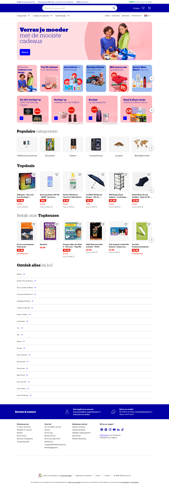
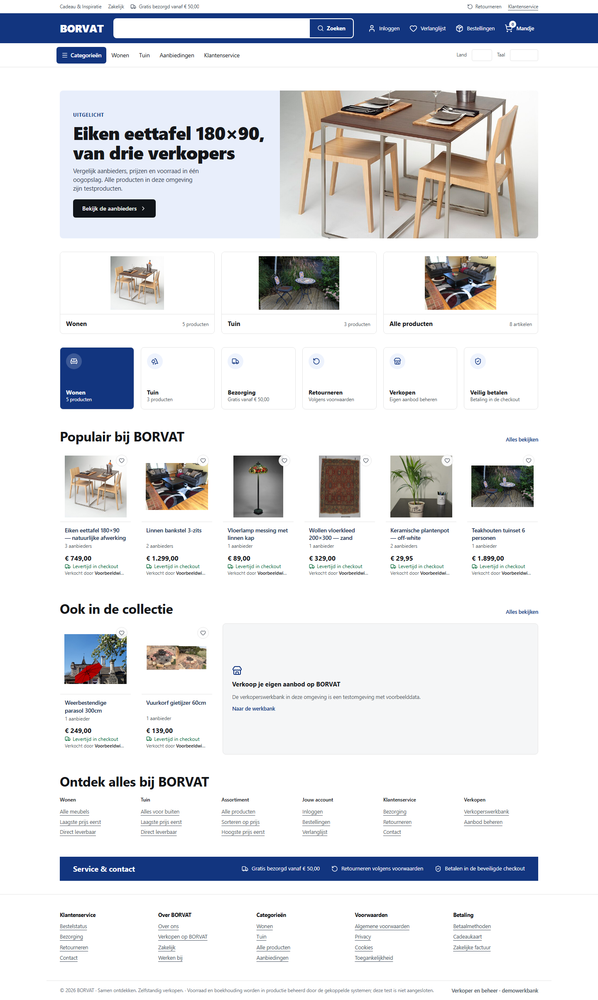
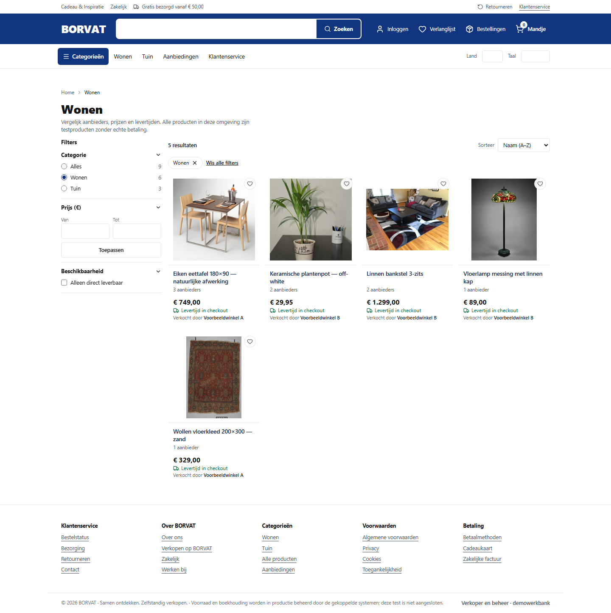
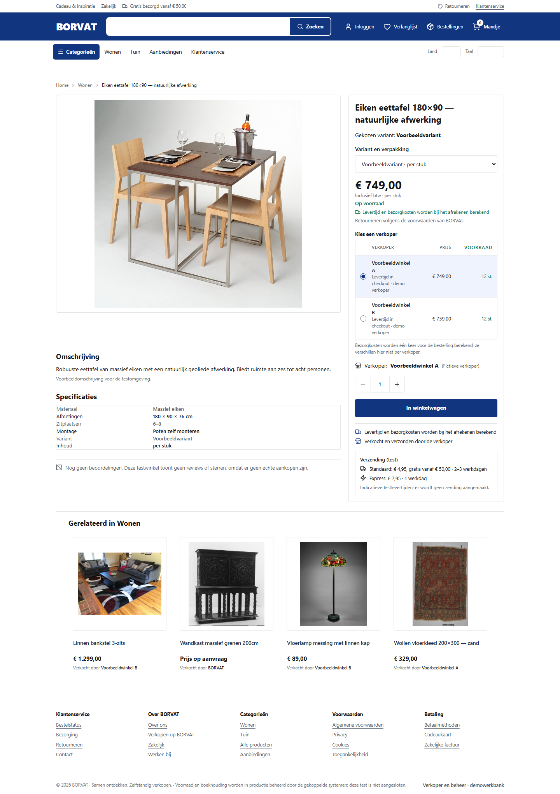
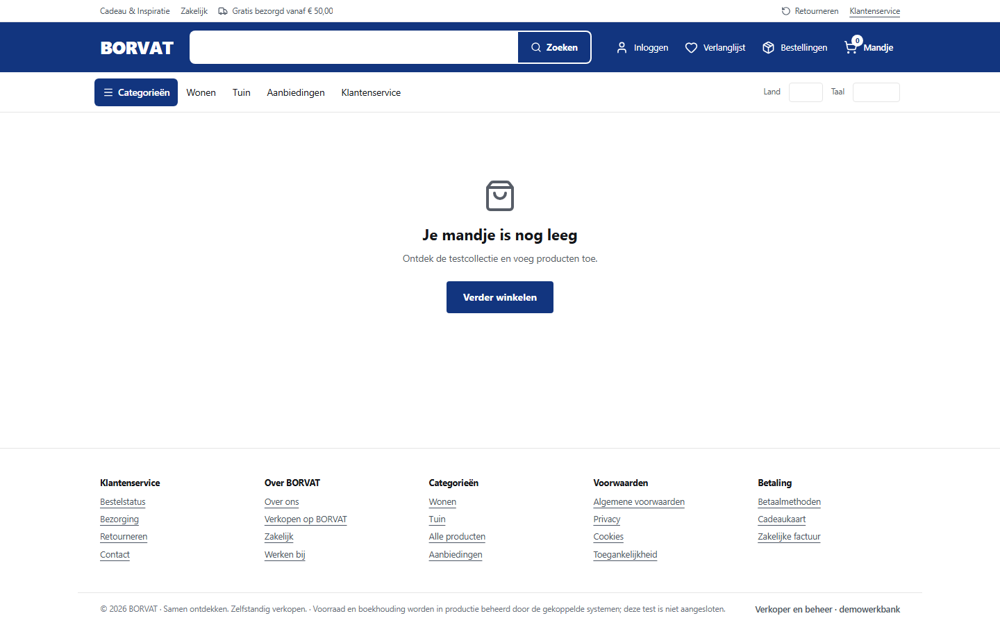
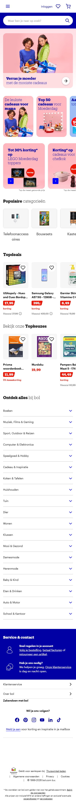
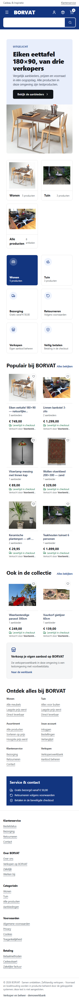

Reference fixed first: the earlier snapshot was missing assets. This pack uses
snapshot 20260507133613, where all 29 images load, captured at 1440×900 and 390×844.
BORVAT captures come from fix/bol-parity-20261103 at the same viewports.
Reference: Wayback 20260507133613 · https://www.bol.com/nl/nl/ · 29/29 assets loaded. BORVAT: local build, same viewport, full page. The test-notice strip is removed from the BORVAT capture in this sheet only, so alignment is 1:1. Heights differ by content volume: 4116px vs 2478px.


No archived reference for this page (product and cart pages return 404/403 in the Wayback index and the cart requires a session). Shown alone, on the same measured system.

No archived reference for this page (product and cart pages return 404/403 in the Wayback index and the cart requires a session). Shown alone, on the same measured system.

No archived reference for this page (product and cart pages return 404/403 in the Wayback index and the cart requires a session). Shown alone, on the same measured system.

Reference 390×844 and BORVAT 390×844, full page, test strip removed from BORVAT.


| Area | Difference | Reason |
|---|---|---|
| Promo carousels | Reference runs two image carousels of campaign tiles; BORVAT shows one service panel row | Campaign content and discounts would be invented; panels carry real destinations instead |
| Category tiles | Reference shows six categories; BORVAT shows two categories plus "all products" | Only two categories exist in the catalogue |
| Assortment | Six-card row then two cards plus a panel | Nine articles; composition sized to the real content |
| Photography | Two photos do not represent their article | Commons-licensed images only |
| Type | Reference uses bol's own Product/Graphik faces | Not licensed; Inter at the measured sizes and heavier weights |
| Ratings and badges | Reference shows review counts and campaign badges | No review or campaign data exists |
| Product and cart pages | No reference capture | Not archived; built on the same measured system |